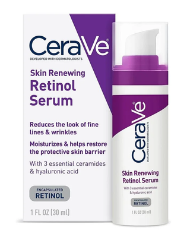
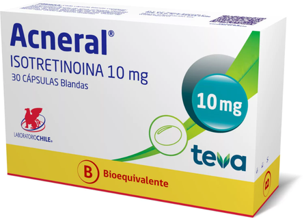
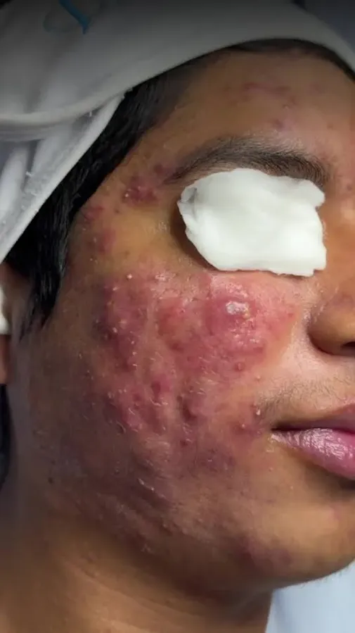

Parches hidrocoloides
Se colocan sobre lesiones individuales y ayudan a protegerlas mientras absorben su contenido.
El tratamiento depende de las causas, el tipo de lesiones y la gravedad. La evaluación profesional es importante antes de elegir una opción.

El tratamiento del acné no es igual para todas las personas. Depende del tipo de lesiones y de su gravedad, por lo que es importante realizar una evaluación profesional.
Se colocan sobre lesiones individuales y ayudan a protegerlas mientras absorben su contenido.
Ayuda a combatir Cutibacterium acnes y puede disminuir la producción de grasa.
Se utilizan principalmente para el acné inflamatorio y ayudan a disminuir la inflamación y controlar la bacteria.
Entre ellos se encuentran adapaleno, tretinoína y tazaroteno. Ayudan a desbloquear los poros y prevenir nuevos comedones.
Entre los ejemplos mencionados están la vitamina D, suplementos herbales, aloe vera y algunos aceites esenciales. Su uso debe realizarse con precaución y, cuando corresponda, bajo supervisión profesional.
Las imágenes acompañan esta sección como referencias visuales y no constituyen recomendaciones de uso.





El tipo de lesión y su gravedad importan. Un tratamiento adecuado para un caso puede no serlo para otro.


El tipo de lesión y su gravedad importan. La atención profesional ayuda a valorar qué opciones son apropiadas.